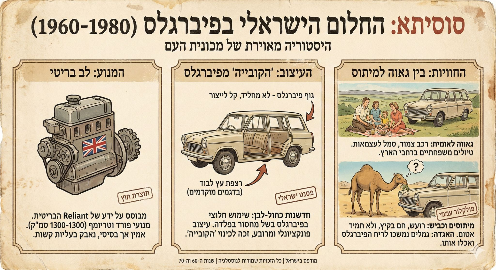

פרק #18 בסדרת לומדים להשתמש ב-Nano Banana Pro:
פורסם במקור ב LinkedIn
פרק #18 בסדרת לומדים להשתמש ב-Nano Banana Pro:
אחד הכיוונים החזקים של המודל הוא היכולת ליצור אינפוגרפיקה תקופתית שמרגישה מדויקת לזמן ולסגנון. הוא יודע להחזיר אותנו לסביבות חזותיות של עשורים שונים דרך טיפוגרפיה צבע וחלוקה של מידע.
התוצאה נראית כמו משהו שיצא מתוך מגזין של אותה תקופה ולא כמו חיקוי מודרני.
כך אפשר לייצר תוכן חינוכי או ויזואלי שמסתמך על שפה תרבותית ברורה.
דוגמא לפרומפט:
"צור אינפוגרפיקה בסגנון רטרו שמספרת את ההיסטוריה של הסוסיתא הישראלית. חלק את התוכן לשלושה אזורים ברורים כמו המנוע העיצוב והחוויות של הנהגים. שמור על טיפוגרפיה תקופתית שתיראה כמו חומר מודפס מהשנים ההן ותישאר קריאה וברורה."
פשוט מדביקים ב gemini . google . com (לא לשכוח ללחוץ על סמל ה״בננה״)
והתוצאה לפניכם:
